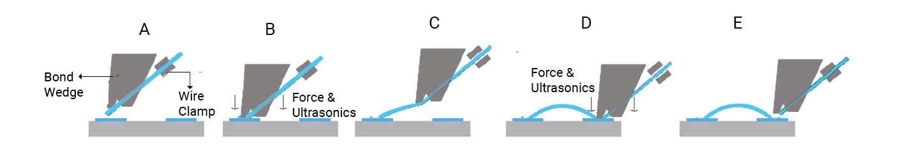
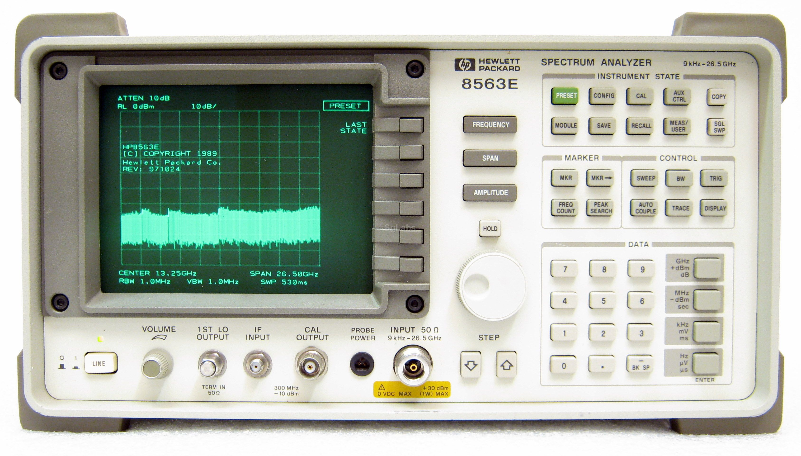
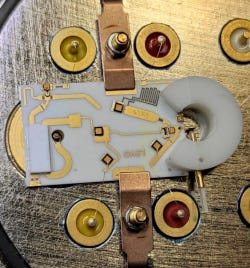
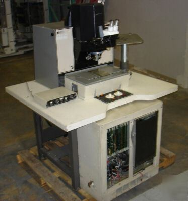

Project overview
Wire bonding
Wire bonding in general
[TODO] TUTTOWedge bonding in detail
 [TODO] TUTTOThe target
Why the need for homemade wedge bonding?

The Bonding Project is an initiative born out of necessity. We want an affordable way to repair an HP 8563E Spectrum Analyzer which is in good working condition except for the yttrium iron garnet (YIG) oscillator which has failed due to age. The component is sold as the HP 5086-7906. To be precise, the oscillator is technically working, it’s just that its frequency response is significantly degraded with respect to its specification; as a matter of fact, it works properly when operated in DC. HP was aware of this problem as it put a maximum lifetime on these components of a few hundred hours of operation.
To revive the YIG we would need to replace the worn-out BJT with a new one. Unfortunately, RF BJTs are not discrete components and therefore lie on integrated silicon dies, which are interfaced with the outside world by pads and wire bonds. Replacing this component by hand is impossible, as humans lack the ability of working with micrometer precision.
The problem of spares

Why don’t we just buy a spare? Spares for vintage precision instruments are scarcely available and sellers ask for premium prices, with listings on Ebay going for almost €900. This is unaffordable for us university students, and the cost of the part cannot be transferred to the University because said spectrum analyzer is owned by a private individual. We figured that we could attempt to perform this repair by repurposing the decommissioned head of an old wedge-bonding machine that we acquired for a significantly lower cost. This part was acquired for €293 from an internet seller from the United States, who dismantled the original machine and sold it piece by piece.
Managing to make this unit functional would enable us to perform this kind of precision repair that no one is normally able to offer. Furthermore, we would use this machine to repair other malfunctioning instruments that we own and that we don’t want to throw away. We want to differentiate ourselves from a world driven by disposable goods and throw away culture.
Lastly, it was the difficulty of this challenge that really drew us on. We have no defined path to follow: we just know we must make it work somehow. We think it will be an excellent learning opportunity which will enable us to merge all the knowledge we accumulated during our studies, as this project will touch almost every area belonging to the field of Electronic Engineering: control theory, power electronics, microprocessor programming, optics, and so on.
The machine
Buying the machine head

The machine from which the head comes from is a Kulicke Soffa 1470. Information is very, very scarce: there are some photos of the original machine body on technology surplus websites, but no manuals and no technical information is readily available. We contacted a repair company who listed this machine on their website, but they didn't respond to our emails. We then contacted a few universities with this particular machine listed on their website, and one of them responded and gave us a significant part of the original manual. [TODO] rivedere inglese qua
The original machine looks like the one in figure. It’s essentially a finely controlled and highly specialized 4-axis robot not too dissimilar from a very expensive 3D-printer. We only own the operating head, i.e. the part of the machine that is directly responsible for performing the bond. The frame, the motors, the motor drivers, the control circuitry, the manual, the embedded microscope, and so on are missing.
What now?
There’s a lot of work to be done. To make it functional we must build the following elements from scratch:
- DC motor servo drivers;
- Heater (temperature controller);
- HMI (Camera, TFT, joystick and buttons);
- Head Solenoids driver;
- Ultrasonic driver;
- Elaboration process (bond procedures, pattern recognition).